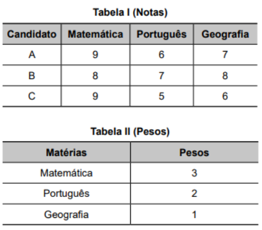
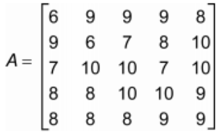

O que são?
Matrizes são um tipo de tabela utilizada na matemática para organizar números. Elas são escritas assim:
Forma Geral
Toda matriz é composta por linhas e colunas, assim como tabelas. Os elementos da primeira linha começam em a11, a12, a13, e assim por diante. A segunda linha começa em a21, a22, a23, e assim por diante. Podemos escrever assim também:
Matriz Diagonal
São os elementos na diagonal da matriz (tanto da direita para esquerda, quando da esquerda pra direita).
⋱ São os elementos da diagonal.
Matriz Triangular
Possui zeros nas pontas
Soma e Subtração de Matrizes
Só pode ser feita em matrizes de mesma ordem (mesmo "tamanho").
Para somarmos ou subtrairmos duas matrizes basta somar ou subtrair os elementos correspondentes, como no exemplo:
↓
Multiplicação por número escalar
Para multiplicarmos uma matriz por um número escalar, basta multiplicarmos cada elemento da matriz pelo número escalar. Veja o exemplo abaixo:
Multiplicação de Matrizes
Só pode ser feita se o numero de colunas do A for igual ao numero de linhas do B.
Para multiplicarmos 2 matrizes, devemos multiplicar cada elemento da linha da primeira matriz pelo elemento da coluna da segunda matriz e somar os resultados. Assim:
↓
Transposição de Matrizes
Uma matriz transposta é uma matriz "ao contrario", suas linhas viram colunas e suas colunas viram linhas.
Transformações Gráficas
Com matizes podemos simular figuras. Usamos a primeira linha como ponto X de um plano cartesiano e a segunda linha como ponto Y.
Translação
Muda o objeto de lugar. Por exemplo: um triângulo possui pontos (0, 2)(4, 2)(3, 6). Se mudarmos ele para (2, 2)(6, 2)(5, 6), ele se deslocou 2 unidades para a direita e 2 unidades para cima. Assim temos:
Reflexão
Espelhamento da figura no eixo X ou Y. Para isso multiplicamos por:
Rotação
Rotação do ângulo θ da figura. Para isso multiplicamos por:
Escala
Alterar a escala da figura. Para isso multiplicamos por:
Sendo Sx a largura da figura e Sy a altura da figura.
Exercícios Exemplos
Questão 1
(ENEM 2023 - PPL) Os candidatos A, B e C participaram de um concurso composto por uma prova de Matemática, uma de Português e outra de Geografia, sendo os pesos dessas três provas diferentes. As notas obtidas por esses três candidatos e os pesos atribuídos a essas provas estão representados nas tabelas:
As notas finais são obtidas somando-se os produtos das notas pelos respectivos pesos. As notas finais dos três candidatos podem ser obtidas multiplicando-se a matriz das notas dos três candidatos nas três provas pela matriz dos pesos das três provas. A matriz das notas finais dos três candidatos é:
Aqui devemos calcular a nota final de cada candidato, usando um dos dois métodos que a questão nos deu, eu preferi multiplicar a nota pelo peso. Assim:
Candidato A:
Candidado B:
Candidato C:
Logo a matriz das notas finais é:
Questão 2
(ENEM 2021)Uma empresa avaliou os cinco aparelhos de celulares (T1, T2, T3, T4 e T5) mais vendidos no último ano, nos itens: câmera, custo-benefí cio, design, desempenho da bateria e tela, representados por I1, I2, I3, I4 e I5, respectivamente. A empresa atribuiu notas de 0 a 10 para cada item avaliado e organizou essas notas em uma matriz A, em que cada elemento aij significa a nota dada pela empresa ao aparelho Ti no item Ij. A empresa considera que o melhor aparelho de celular é aquele que obtém a maior soma das notas obtidas nos cinco itens avaliados.
Com base nessas informações, o aparelho de celular que a empresa avaliou como sendo o melhor é?
Essa questão nem precisa de cálculo, podemos apenas analisar o seguinte: as linhas são os Ts e as colunas são os Is. Logo, a linha que tiver maior soma das notas é o aparelho melhor. Olhando por cima percebemos que a linha 4 possui 2 notas iguais a 10, 2 notas iguais a 8 e uma nota igual a 9. Logo, por apresentar a maiores números, a linha 4 é a melhor.
>>Proximo Conteúdo
>>Página de Conteúdos